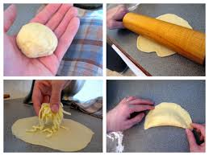
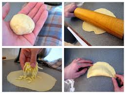
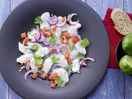
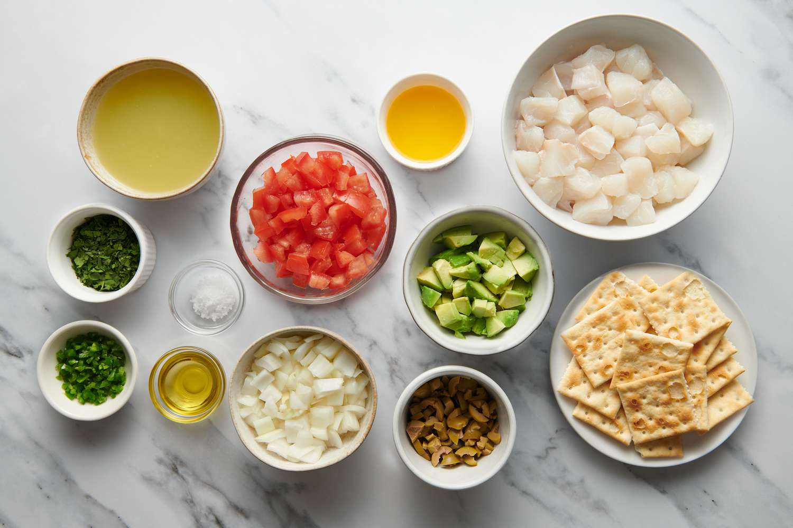

Lasagna


Lasagna, a timeless classic in the world of comfort food, is a layered masterpiece that combines rich flavors and textures into a savory symphony. Originating from Italy, this dish has evolved into a global favorite, capturing the hearts and taste buds of many. Whether it's a family gathering or a cozy dinner for two, lasagna's hearty layers of pasta, savory meat sauce, creamy béchamel, and melted cheese create a culinary experience that is both comforting and indulgent. Let's embark on a journey to create the perfect homemade lasagna that will fill your kitchen with irresistible aromas and leave everyone eagerly gathering around the dinner table.
Ingredients
- 1 pound (450g) ground beef or Italian sausage
- 1 onion, finely chopped
- 3 cloves garlic, minced
- 1 can (28 oz) crushed tomatoes
- 2 cans (14 oz each) tomato sauce
- 1 can (6 oz) tomato paste
- 2 teaspoons dried oregano *Optional*
- 2 teaspoons dried basil
- Salt and pepper to taste
- 12 lasagna noodles, cooked al dente
- 3 cups shredded mozzarella cheese
- 2 cups ricotta cheese
- 1 cup grated Parmesan cheese
- 2 large eggs
- Fresh basil or parsley for garnish *Optional*
Instructions
-
Prepare the Sauce:
- In a large skillet, brown the ground beef or sausage over medium heat.
- Add chopped onions and garlic, sauté until softened.
- Stir in crushed tomatoes, tomato sauce, tomato paste, oregano, basil, salt, and pepper.
- Simmer the sauce for at least 30 minutes, allowing the flavors to meld.
-
Prepare the Cheese Mixture:
- In a bowl, combine ricotta cheese, 1 1/2 cups mozzarella, Parmesan, and eggs. Mix well.
-
Assemble the Lasagna:
- Preheat the oven to 375°F (190°C).
- In a baking dish, spread a thin layer of sauce.
- Place a layer of cooked lasagna noodles over the sauce.
- Add a portion of the cheese mixture and spread evenly.
- Repeat the layers: sauce, noodles, cheese mixture, until you reach the top.
- Finish with a layer of sauce and sprinkle the remaining mozzarella on top.
-
Bake:
- Cover the dish with foil and bake for 25 minutes.
- Remove the foil and bake for an additional 15 minutes or until the top is golden and bubbly.
-
Serve:
- Allow the lasagna to cool for a few minutes before slicing.
- Garnish with fresh basil or parsley.
Empanadas de Viento (From Ecuador)
 

Empanadas de Viento, a delightful Ecuadorian treat, literally translates to "wind-filled turnovers," capturing the essence of these light, airy pastries. Originating from the coastal regions of Ecuador, these empanadas are a culinary delight enjoyed during festivities and special occasions. What sets them apart is the delicate, golden pastry, resembling pockets of air, encasing a sweet and savory filling. Traditionally dusted with powdered sugar, these empanadas offer a unique dance of textures and flavors, making them a perfect accompaniment to a cup of coffee or a sweet ending to any celebration. Let's embark on the journey of crafting these heavenly Empanadas de Viento that will surely whisk you away to the coastal breezes of Ecuador.
Ingredients
- 2 cups all-purpose flour
- 1/4 cup sugar
- 1/2 teaspoon salt *Optional*
- 1/2 teaspoon baking powder
- 1/2 cup unsalted butter, cold and cut into small pieces
- 1/2 cup milk
- 1 teaspoon vanilla extract
- Vegetable oil for frying
- Powdered sugar for dusting *Optional*
Instructions
-
Prepare the Dough:
- In a large mixing bowl, combine the flour, sugar, salt, and baking powder.
- Add the cold butter pieces and use your fingers or a pastry cutter to incorporate the butter into the dry ingredients until it resembles coarse crumbs.
-
Form the Dough:
- Make a well in the center of the mixture and pour in the milk and vanilla extract.
- Mix until the dough comes together. If needed, knead the dough gently on a floured surface until smooth.
- Wrap the dough in plastic wrap and refrigerate for at least 30 minutes.
-
Roll and Cut the Dough:
- Preheat the oil in a deep pan or fryer to 350°F (175°C).
- Roll out the chilled dough on a floured surface to about 1/8 inch thickness.
- Cut out rounds using a circular cutter or a glass.
-
Fill and Seal:
- Place a small amount of your favorite filling (fruit jam, cheese, or a combination) in the center of each round.
- Fold the dough over the filling, creating a half-moon shape, and press the edges to seal.
-
Fry the Empanadas:
- Carefully place the sealed empanadas in the hot oil and fry until they turn golden brown on both sides.
- Remove and drain on paper towels to absorb excess oil.
-
Dust with Powdered Sugar:
- Once the empanadas are slightly cooled, generously dust them with powdered sugar.
-
Serve and Enjoy:
- Empanadas de Viento are best enjoyed warm. Serve them as a delightful snack or dessert.
Ceviche
 Fish Ceviche, a refreshing and zesty dish with roots in Latin American cuisine, is a culinary celebration of vibrant flavors and pristine simplicity. This dish transforms fresh, raw fish into a tantalizing masterpiece through the process of marination in citrus juices, resulting in a burst of freshness that dances on the taste buds. Combined with crisp vegetables, aromatic herbs, and a touch of spice, Fish Ceviche is a perfect blend of textures and tastes. Whether served as a light appetizer or a main course, this dish embodies the essence of coastal living, bringing the ocean's essence to your table.
Ingredients
- 1 pound fresh white fish fillets (such as tilapia or snapper), diced into bite-sized pieces
- 1 cup freshly squeezed lime juice *Optional*
- 1 cup freshly squeezed lemon juice
- 1 small red onion, thinly sliced
- 1-2 jalapeño peppers, seeded and finely chopped
- 1 cup cherry tomatoes, halved
- 1 cucumber, peeled and diced *Optional*
- 1/2 cup fresh cilantro, chopped
- Salt and pepper to taste
- Avocado slices for garnish
- Tortilla chips for serving
Instructions
-
Prepare the Fish:
- Ensure the fish fillets are fresh and deboned.
- Cut the fish into uniform bite-sized pieces for even marination.
-
Marinate the Fish:
- In a non-reactive bowl, combine the diced fish with freshly squeezed lime and lemon juice.
- Ensure the fish is fully submerged in the citrus juice. Allow it to marinate in the refrigerator for at least 30 minutes, or until the fish turns opaque.
-
Combine Vegetables and Herbs:
- In a separate bowl, combine thinly sliced red onion, chopped jalapeños, halved cherry tomatoes, diced cucumber, and fresh cilantro.
-
Mix and Season:
- Gently mix the marinated fish with the vegetable and herb mixture.
- Season the ceviche with salt and pepper to taste. Adjust the seasoning as needed.
-
Chill and Let Flavors Mingle:
- Return the mixed ceviche to the refrigerator for an additional 15-30 minutes to allow the flavors to meld.
-
Serve with Garnishes:
- Just before serving, garnish the Fish Ceviche with avocado slices for creaminess.
- Serve the ceviche chilled, accompanied by tortilla chips for a delightful crunch.
-
Enjoy Fresh and Tangy Delight:
- Dive into the vibrant flavors of your homemade Fish Ceviche, savoring the freshness and zest that defines this classic dish.